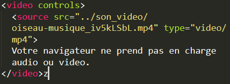

<source>
| Description | Exemple | Résultat de l'exemple |
|---|---|---|
|
La balise <source>définit différentes ressources médiatiques pour un élément <picture>, <audio> ou <video><. C'est un élément vide : il ne possède pas de contenu et ne nécessite pas de balise fermante. |
 |